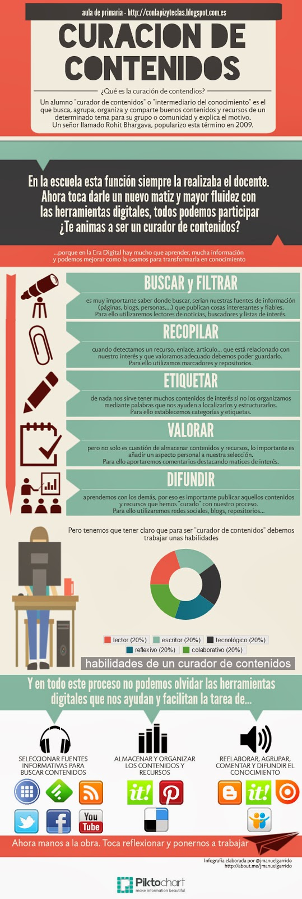
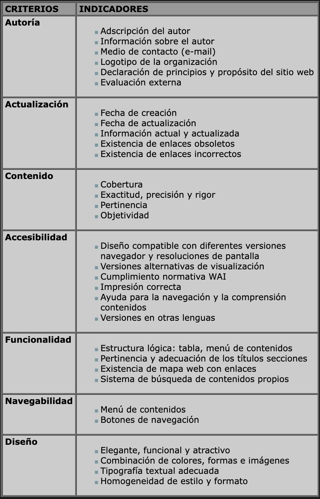

Ayúdate a encontrarte
¿Qué es la curación de contenidos?
Una de las formas más eficaces de aprendizaje es cuando el propio estudiante investiga, organiza y construye su propio esquema de conocimiento. En lugar de limitarse a memorizar información ya estructurada, se le propone generar sus propios contenidos, lo que implica un proceso profundo de comprensión y estructuración desde el principio, favoreciendo así un aprendizaje más significativo.
Para lograrlo, es fundamental desarrollar competencias que permitan buscar, procesar, comunicar y transformar la información en conocimiento útil. Estas habilidades no solo son clave para los estudiantes, sino también para los docentes, quienes requieren acceder y seleccionar materiales de calidad para enriquecer su labor educativa. En este contexto, la curación de contenidos se convierte en una capacidad esencial tanto para docentes como para alumnos.
El término “curación de contenidos” (del inglés content curation) hace referencia al proceso de seleccionar información elaborada por otros sobre un tema específico. Esta tarea debe ser acompañada por el docente, quien guía y orienta al estudiante durante el proceso, estimulando así el desarrollo del pensamiento crítico.

Etapas de la curación de contenidos
La curación de contenidos se estructura habitualmente en cuatro fases principales, complementadas por una etapa inicial y otra final. Este enfoque, conocido como las “4S de la curación de contenidos”, fue desarrollado por Javier Guallar y Javier Leiva-Aguilera en sus libros El content curator y Las 4S’s de la content curation, y ha continuado evolucionando en publicaciones posteriores.
Las fases son:
- Diseño: Se establecen los objetivos, temáticas, fuentes de información, formatos de publicación, frecuencia de actualización y otros aspectos estratégicos.
Search (búsqueda): Implica localizar contenidos pertinentes utilizando herramientas como alertas, lectores RSS o monitoreo de redes sociales.
Select (selección): Se eligen los contenidos más adecuados con base en su calidad y relevancia, aplicando juicio crítico y, cuando sea necesario, herramientas de filtrado.
Sense making (caracterización): En esta etapa se añade valor a los contenidos seleccionados mediante análisis, interpretación y elaboración de publicaciones propias.
Share (difusión): Se comparte la información curada a través de los canales más adecuados para el público al que va dirigida.
Evaluación: Se revisa periódicamente todo el proceso con el fin de detectar mejoras, ajustar estrategias y optimizar cada una de las fases anteriores.
Ejemplos concretos del uso de las 4S pueden encontrarse en recursos como Sistema personal de content curator o Toolkit content curator edición 2022, así como en infografías que representan gráficamente cada una de las etapas y sus interrelaciones.
En el ámbito educativo, esta infografía elaborada por @jmanuelgarrido resulta especialmente útil para ilustrar este proceso
José Manuel Garrido. Curación de Contenidos
Criterios de Búsqueda de Contenido Digital

En la actualidad, el acceso a la información digital es extenso y variado, ya que cualquier persona puede generar y compartir contenido en línea. Esta realidad exige la aplicación de ciertos criterios de filtrado que aseguren la veracidad, confiabilidad y calidad de la información utilizada.
Sin embargo, es común que los estudiantes no tomen en cuenta la calidad de las fuentes, principalmente por desconocer los criterios adecuados para seleccionarlas, recurriendo con frecuencia al primer resultado que ofrece un motor de búsqueda. Algo similar puede ocurrir con los docentes, quienes, al seleccionar recursos didácticos, a veces omiten un análisis crítico sustentado en indicadores de calidad.
Una estrategia eficaz para evaluar recursos digitales es aplicar el enfoque de las “lentes 3D”, el cual propone examinar no solo el contenido, sino también su contexto, finalidad y los parámetros que respaldan su elección. Este tipo de análisis contribuye a una selección más consciente y adecuada de los materiales educativos.
Dicho todo lo anterior, los enlaces de las dos herramientas de curación de contenido que he creado son las siguientes:
Enlace para el día a día: https://www.symbaloo.com/shared/AAAABFrF-aMAA41_leWybw==
Curación de contenido para el alumnado: https://padlet.com/lcobest004/curaci-n-de-contenidos-para-el-alumnado-dbtf83h8tlopgse5